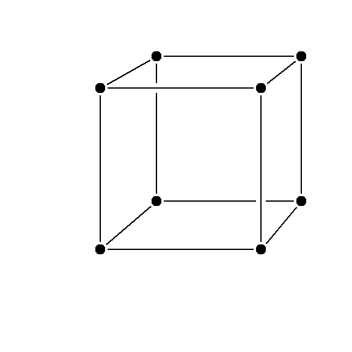
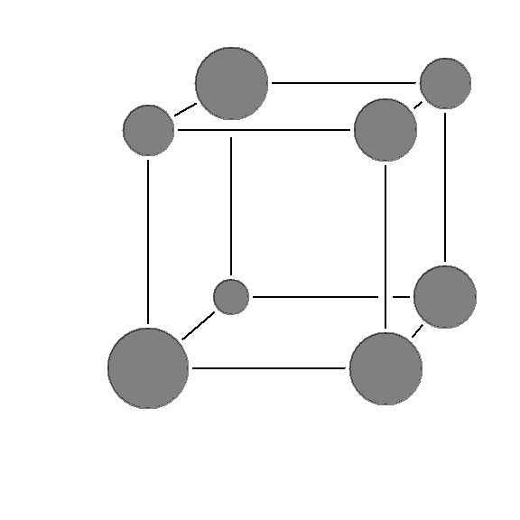
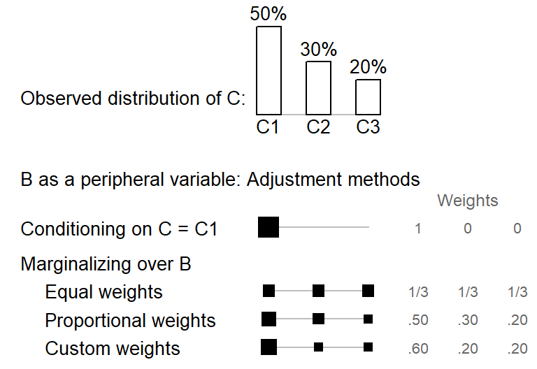
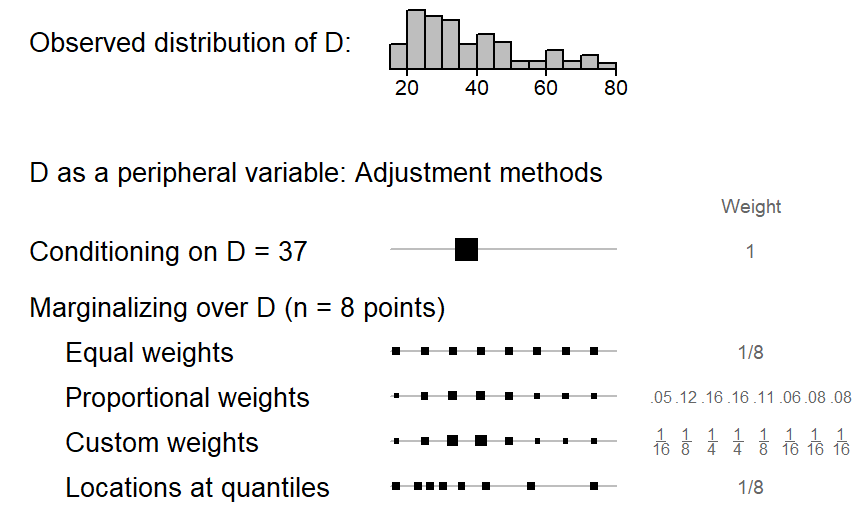
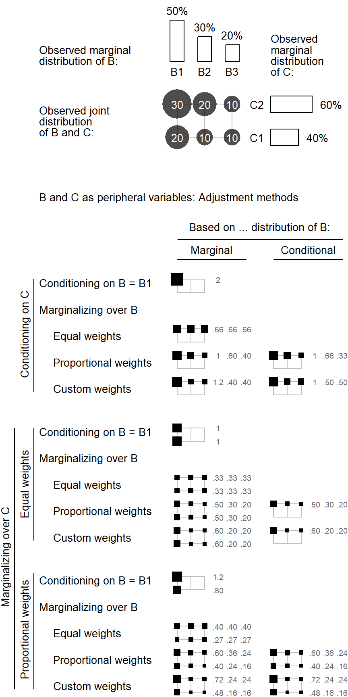
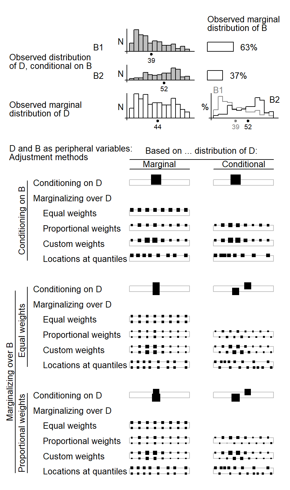

10 Model summary: Adjusted predictions and comparisons
Prediction provides a generic conceptual framework for the summary of many different types of predictive models, including generalized linear models. For generalized linear mixed models, a number of issues arise, which we address in the current section. We will start by clarifying the difference between model coefficients and parameters on the one hand, and model-based predictions on the other. Then we will deal in turn with a number of questions that arise when summarizing a model using predicted quantities. These are grouped into # aspects.
- Condition
- Predictor space
10.1 Model-based quantities: regression coefficients, predictions, estimates
We begin by delineating different types of quantities that are encountered in regression modeling. We will use the term regression coefficient to collectively refer to all coefficients (or parameters) that are part of a regression structure. This includes intercepts and slopes (both fixed and “random”) as well as the parameters that describe the (joint) distribution of the “random effects” in the model, i.e. variance (or standard deviation) and covariance (or correlation) parameters. This means that all the quantities that are typically listed in a regression table will be referred to as regression coefficients.
While regression coefficients have a clear meaning, the information they express may not be of direct interest to the researcher, which means that they may not provide an answer to the question that is actually being asked of the data. In GLMMs, a further limitation of regression coefficients is that fact that they are defined on the model scale (e.g. the logit scale), which may be difficult to interpret.
Let us call into mind the meaning expressed by two types of regression coefficient, which often assume a central role in model interpretation:
The (fixed) intercept of a model is the predicted value on the model scale, for a situation where all predictors are set to 0. The meaning of the intercept therefore depends on how the predictor variables are scaled.
A (fixed) slope, on the other hand, is tied to a specific predictor; it expresses a difference between two conditions. The first condition is the one denoted by the intercept, which provides the baseline. The second predicted value is for a new condition, which differs from the baseline in that the predictor of interest has been increased by 1 unit. The meaning of a (fixed) slope therefore also depends on the scaling of all variables in the model, especially the associated predictor. Critically, the difference applies to one particular point in the predictor space.
10.2 Predicted quantites: Predictions and comparisons
There are two fundamentally different types of predicted quantity. The first is a plain prediction, which is a specific value on the outcome scale. In the case of logistic regression, this could be an individual proportion (or percentage) for the outcome variable. Predictions can be made for a specific point in the predictor space, or they may be averaged over some variable. We will return to this point further below.
The second type of predicted quantity expresses a comparison between two predicted values. Comparisons help us understand the way in which a specific predictor relates to the outcome of interest. Comparisons may be expressed in two basic ways: in absolute terms (differences) or in relative terms (ratios). Like predictions, comparisons may be evaluated at a specific point in the predictor space, or they may be averaged over other variables in the model.
- difference between the averages vs. average over the differences
10.3 Focal vs. peripheral variables
If a model includes multiple predictor variables, model interpretation usually proceeds step by step, considering each predictor in turn. This is because in a regression model with three or more predictor variables, it is usually difficult to appreciate patterns by jointly considering all predictors. Instead, model interpretation requires a compartmentalized approach. A distinction can then be made between focal and peripheral variables. This division does not imply differences in the linguistic relevance of variables, but is a necessary feature of a compartmentalized strategy. The specific predictor(s) whose association with the outcome is to be examined is/are referred to as the focal variable(s). The remaining variables, which remain backgrounded at this step of model interpretation, are the peripheral variables.
If a predictor does not enter into a statistical interaction with another variable, it will usually be considered in isolation, meaning there will only be one focal variable. If there is a detectable interaction between two (or more) variables, these will usually (though not necessarily) be considered together.
10.4 Adjusting for a peripheral variable
Since peripheral variables are the ones we wish to background at a specific step in model interpretation, we must adjust for these features. In some sense, we must decide on a way of ignoring them when making the focal comparisons. Peripheral variables cannot be simply ignored, however. Instead, we must decide on how to handle them when forming predictions for the focal variables. There are two general strategies for this, to which we now turn.
10.4.1 Conditioning vs. marginalizing
One option would be to hold a peripheral variable at a specific value. This means that we decide on a value that may be considered informative (or representative) and then set the predictor to this value. We will follow Lane & Nelder (198X) and refer to this as the conditional approach. For a quantitative predictor, this could be the mean, and for a binary variable (coded as 0 and 1), this could be the middle value (i.e. 0.5). The distinctive feature of the conditional approach is that we “ignore” a predictor by holding it at a specific value.
The second way in which we may background a predictor is by averaging over the predictions we obtain across all of its levels. Instead of fixing the binary variable Female (coded as 0 vs. 1) to 0.5, for instance, we could average over the predictions we obtain for male and for female respondents. We will follow Lane & Nelder (198X) and refer to this as the marginal approach.
Thus, if the binary indicator variable Female assumes the status of a peripheral variable, a prediction or comparison of interest can either be conditional on Female - setting the variable Female to the intermediate value - or marginal to Female - averaging over the prediction obtained for the two conditions (i.e. male and female respondents).
10.4.2 Marginal approach: Simple vs. weighted averages
When averaging over the levels of a peripheral variable, different weighting schemes may be used. The most straightforward one is the simple, unweighted average, where all levels have the same weight. In some settings, however, we may not want to assign equal weight to all levels (or values) of a peripheral variable. We may decide to weight them differently, based on their population frequency. This applies in particular to internal variables.
10.4.3 Weighting schemes for quantitative variables
Different weighting schemes may be applied when marginalizing over quantitative variables. There are two general approaches. We may decide to approximate the distribution of the variable in the sample. In this case, we may used quantiles of the observed distribution. Alternatively, we may prefer to assign equal weights across the range of the variable. In this case, we would select equal increments on the scale of the variable. This approach may make more sense for (quasi-)temporal features.
10.4.4 Predictor space

10.4.5 Handling peripheral variables
When forming predictive margins, we usually proceed in a step-by-step fashion. A specific predictive model query focuses on one (or several) targeted variable(s). The remaining variables are then backgrounded and assume the status of peripheral variables. When forming predictive margins for targeted variables, we must decide how to handle the peripheral ones. Backgrounding techniques involve some form of adjustment. There are two general strategies, conditioning and marginalizing.
10.4.5.1 Conditioning vs. marginalizing
Conditioning means that we set a peripheral variable to a (user-specified) value. For categorical features, this is often the mode, and for quantitative variables, the mean. If we set the peripheral variable B to the level B1 (or, if it is a quantitative variable, the value 40.1), the predictive margins are conditional on B = B1 (or B = 40.1).
Marginalizing instead involves some form of averaging over the levels (or values) of the peripheral features. In contrast to conditioning, then, marginalizing aims for a broader representation of the predictor space. If we average over the levels of the peripheral variable B, the predictive margins are marginal to B. When marginalizing over a peripheral variable, we must decide on how to weight the levels (or values). We can form simple (i.e. equally-weighted) averages, or weighted averages. Weights may be chosen to reflect the distribution of a peripheral variable in the data, or we may use custom weights, based on some external source of information.
10.4.5.2 Backgrounding a single peripheral variable
Let us compare these backgrounding strategies in a simple setting where the peripheral variable B is categorical, with three levels. The bar chart at the top of ?fig-illustration-backgrounding-categorical shows the distribution of variable B in the data. Level B1 is the most frequent one, with 60% of the tokens. Below the bar chart, different backgrounding strategies and weighting schemes are shown. The first approach, conditioning on B = B1, holds this variable at the level B1 and ignores the other categories. In ?fig-illustration-backgrounding-categorical, the modal category, i.e. the one with the highest frequency, is chosen; of course, other choices are possible. In some sense, conditioning on B = B1 is a special case of weighted mean - one which assigns the weight 1 to the selected levels, and 0 to all others. This is illustrated by the singleton black square, which amasses the full weight.

png
2 Three ways of marginalizing over C are shown at the bottom of ?fig-illustration-backgrounding-categorical. These differ in the size of the weights that are assigned to the three levels of the variable. As illustrated by the identically sized black squares, equal weights give the same importance to all categories. The second scheme, proportionate weights, instead weights the categories in proportion to their frequency in the data. The final option is to select custom weights, which may be based on external (e.g. census) data.
When the peripheral variable is continuous, conditioning on D works in a similar way: The variable is held at a representative value such as its mean. As ?fig-illustration-backgrounding-quantitative illustrates, this means that the full weight is given to this value. Marginalizing, on the other hand, works differently for continuous variables. It requires selecting a number of points on the continuous scale to represent the variable’s distribution. In ?fig-illustration-backgrounding-quantitative, we have settled for 8 points to obtain a sufficiently detailed coverage of variable D. The first three weighting schemes rely on equally-spaced points, which here range from the 5th to the 95th percentile. A balanced representation of age groups is achieved with equal weights. To match the weighting scheme with the representation of age groups in the data, proportional weights may be assigned to the points. Finally, custom weights may be used. The final scheme uses quantiles (instead of equally-spaced steps) to determine the points informing the averaging procedure. The motivation is similar to that underlying proportional weighting, the aim being to attune predictive margins to the observed distribution of the data.
[1] 13
png
2 10.4.5.3 Backgrounding multiple peripheral variables

png
2 [1] 13[1] 13[1] 38.9[1] 52.5[1] 43.9
png
2